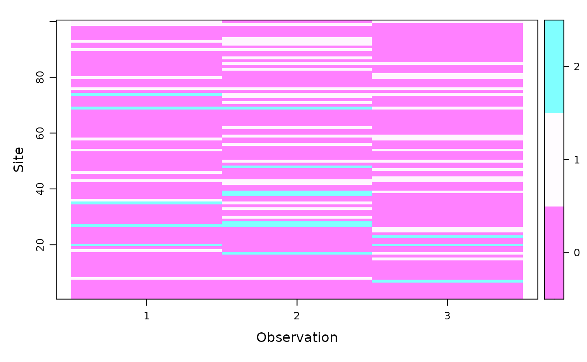

unmarkedFrameOccuMS.RdOrganizes multi-state occupancy data (currently single-season only)
along with covariates. This S4 class is required by the data argument
of occuMS
unmarkedFrameOccuMS(y, siteCovs=NULL, obsCovs=NULL, numPrimary=1, yearlySiteCovs=NULL)
| y | An MxR matrix of multi-state occupancy data for a species,
where M is the number of sites and R is the maximum number of
observations per site (across all primary and secondary periods, if
you have multi-season data). Values in |
|---|---|
| siteCovs | A |
| obsCovs | Either a named list of |
| numPrimary | Number of primary time periods (e.g. seasons) for the dynamic or multi-season version of the model. There should be an equal number of secondary periods in each primary period. |
| yearlySiteCovs | A data frame with one column per covariate that varies among sites and primary periods (e.g. years). It should have MxT rows where M is the number of sites and T the number of primary periods, ordered by site-primary period. These covariates only used for dynamic (multi-season) models. |
unmarkedFrameOccuMS is the S4 class that holds data to be passed
to the occuMS model-fitting function.
an object of class unmarkedFrameOccuMS
Ken Kellner contact@kenkellner.com
# Fake data #Parameters N <- 100; J <- 3; S <- 3 psi <- c(0.5,0.3,0.2) p11 <- 0.4; p12 <- 0.25; p22 <- 0.3 #Simulate state z <- sample(0:2, N, replace=TRUE, prob=psi) #Simulate detection y <- matrix(0,nrow=N,ncol=J) for (n in 1:N){ probs <- switch(z[n]+1, c(0,0,0), c(1-p11,p11,0), c(1-p12-p22,p12,p22)) if(z[n]>0){ y[n,] <- sample(0:2, J, replace=TRUE, probs) } } #Covariates site_covs <- as.data.frame(matrix(rnorm(N*2),ncol=2)) # nrow = # of sites obs_covs <- as.data.frame(matrix(rnorm(N*J*2),ncol=2)) # nrow = N*J #Build unmarked frame umf <- unmarkedFrameOccuMS(y=y,siteCovs=site_covs,obsCovs=obs_covs) umf # look at data#> Data frame representation of unmarkedFrame object. #> y.1 y.2 y.3 V1 V2 V1.1 V1.2 V1.3 #> 1 0 0 0 -0.64184095 0.548210901 -0.53520886 -0.8356606410 -0.758469900 #> 2 0 0 0 -0.97066324 -1.522230182 -1.32412990 0.7884674711 -1.376718465 #> 3 0 0 0 -1.29234619 1.028677258 -1.07039524 -0.9867409314 0.536586184 #> 4 0 0 0 -0.86270402 0.789193704 -0.44520658 -0.0035014370 -0.623814095 #> 5 0 0 0 -2.16186578 0.340937594 0.46084693 -0.5775201198 1.687608566 #> 6 0 0 0 1.36807697 -1.494366683 0.02566052 -0.5903071617 1.382021803 #> 7 0 0 2 -0.49683984 -0.225543593 0.03190134 -1.0025066940 -0.955665075 #> 8 1 1 0 0.15637447 -0.307737024 0.49056568 -1.1794173724 1.556754426 #> 9 0 0 0 0.04243094 0.177667082 -0.90426101 -1.5027029029 -1.564837363 #> 10 0 0 0 0.29982884 -2.225663422 -0.99417265 0.5575281557 -1.932779539 #> 11 0 0 0 0.02178191 0.974740952 -0.48807934 -0.0706973592 -1.419587253 #> 12 0 0 0 0.75375599 -1.567913894 0.18954846 -2.6224338033 -1.676943934 #> 13 0 0 0 1.06726362 -0.290134835 1.54275628 1.6812303146 1.043101669 #> 14 0 0 0 -0.66939632 -1.085662469 2.54097110 -0.5617795129 1.744045996 #> 15 0 0 1 -1.49849337 -0.487192711 -1.14145958 0.9093334431 -1.693295398 #> 16 0 0 0 0.24366876 -0.882772781 0.53830842 -2.1471398594 -1.654298198 #> 17 0 2 1 -0.11960214 0.186851868 -1.17214068 -0.7391005026 0.192501146 #> 18 1 0 0 -0.80760289 -0.163639051 -0.18973765 1.3336850772 1.487797494 #> 19 0 0 0 0.09131803 -0.088305581 0.86057330 -0.4099882319 0.009603735 #> 20 2 0 2 0.92576093 0.635917459 -0.14426542 1.0010663974 -0.074340286 #> 21 0 0 0 0.05379044 0.996137610 -0.75238923 0.5517417828 -2.178216721 #> 22 0 0 0 -1.22456890 1.086729800 0.09251114 -0.6870995782 -0.350172527 #> 23 0 0 2 0.31769023 0.476887615 0.59993325 0.2324404273 0.624939015 #> 24 0 0 0 -1.14544798 -0.246815426 0.02779428 -0.8387826308 -1.017810580 #> 25 0 0 1 0.27393584 -0.879350872 -0.04780211 2.0222448696 -1.697631133 #> 26 0 0 1 0.20349117 -1.174765141 0.16838284 -0.5222329406 -0.731790040 #> 27 2 2 0 1.51236233 1.313530633 0.55645452 -0.2405626819 1.365587671 #> 28 0 2 0 -0.19020727 0.101634956 -0.77874395 -1.7431565556 -1.211622486 #> 29 0 0 0 0.73398201 1.917755976 -1.22046577 0.7313058206 0.117969235 #> 30 0 1 0 0.88543869 0.772055258 0.60565918 0.2552602509 0.939343165 #> 31 0 0 0 -0.20871070 0.608179372 1.18999415 0.9520827795 -0.428301362 #> 32 0 0 0 -1.46930033 -0.149808640 -0.87302008 0.5398339243 0.925032621 #> 33 0 1 0 -0.03533960 0.902953785 -0.96825863 0.8269954342 -0.694504455 #> 34 0 0 0 0.29990145 1.006861854 -0.25812995 -0.5095114078 -0.409117306 #> 35 2 1 0 0.39163712 -2.104458877 -2.65533184 0.2518631290 -0.931551244 #> 36 1 0 0 0.17402993 -0.055362929 -0.62678646 -1.1019363818 -0.124774439 #> 37 0 0 0 -0.21195779 -0.142742628 -0.28941648 0.9445854587 0.710177379 #> 38 0 2 0 1.09060298 0.448182395 0.49978879 -2.0657522201 0.313389619 #> 39 0 2 1 -0.03023812 1.937838542 -1.93840623 2.3770803428 0.095257563 #> 40 0 0 0 -0.09080731 1.930482788 -1.22825986 -0.0004527973 0.181623331 #> 41 0 0 0 0.45725551 0.637576384 1.05912965 1.1657936885 -3.825192770 #> 42 0 1 0 0.39260441 0.378542277 0.97341266 -1.8747091496 0.696300790 #> 43 1 1 1 1.75971039 2.644171544 -1.55170921 -0.2172027567 0.200334047 #> 44 0 0 1 1.29399569 0.725157301 2.24446004 -0.5981348356 2.376398852 #> 45 0 0 0 0.98258762 -1.309462096 -1.42285524 -0.4176629645 -0.671900133 #> 46 1 0 0 0.26220145 -0.868863220 -0.93930794 0.5003425311 0.495779431 #> 47 0 0 1 -0.63420164 -0.013568857 -2.29226575 -0.9625057645 -1.685839610 #> 48 0 2 0 -1.08804619 0.999472090 1.22092586 0.8589559642 0.495125069 #> 49 0 0 0 -0.93301612 -0.588890169 1.89631570 0.0458428395 0.323220836 #> 50 0 1 1 -0.86314585 0.543692463 -1.09725322 2.1192200553 -0.208625280 #> 51 0 0 0 0.50238220 -1.337667376 -0.58726938 -0.4842070623 2.229149501 #> 52 0 0 0 -0.56479505 0.293055307 -1.05489215 0.4654078806 -0.193418436 #> 53 0 0 0 -0.17649150 -0.270231836 0.96536418 0.8676121064 -1.075456399 #> 54 1 0 1 1.32140318 1.310052249 -2.39611235 1.8459489418 2.143414123 #> 55 0 0 0 0.27256808 1.693188759 -0.64959655 1.6275373724 0.626129077 #> 56 0 1 0 0.01105622 0.150314192 -0.23022334 0.7276509599 -0.003856744 #> 57 0 0 0 -0.78054627 0.314554325 0.68226024 0.2667503275 0.442835321 #> 58 1 0 1 -0.70110058 -0.051994432 -0.16009563 0.3027330830 1.431755443 #> 59 0 1 1 -0.75936487 0.956109028 0.76036431 0.4578848894 0.247813218 #> 60 0 0 0 -0.17025990 0.193907191 -0.01167935 -1.4804643446 -0.880207243 #> 61 0 0 0 -0.65628585 -0.548031010 0.99859327 0.2088545072 -0.508443215 #> 62 0 1 0 0.15754423 0.305963726 0.65339480 -1.0099323484 0.203324508 #> 63 0 0 0 1.09341476 -0.722769969 -0.83451137 -0.6252577722 0.511477082 #> 64 0 0 0 0.30104243 -0.950418512 -0.59934928 -0.0938764014 0.312626324 #> 65 0 0 0 -0.55848939 0.213063736 -1.12719048 2.3789054015 1.046135322 #> 66 0 0 0 -1.07537588 0.609497162 0.29781154 -1.7874894163 1.004488932 #> 67 0 0 0 0.20078737 0.442387967 1.24421188 0.5116851373 0.474771131 #> 68 0 0 0 0.08402028 -0.356939616 -0.51687077 -1.6597489739 0.224008679 #> 69 2 2 1 -0.92639870 1.751916726 1.80724876 0.1897257652 -1.162926270 #> 70 0 0 0 0.38670071 -0.848822909 3.01762144 -0.3857213667 0.562749831 #> 71 0 1 0 0.66041789 -0.036849050 0.88620092 -0.3564657983 0.249098500 #> 72 0 0 0 -0.27608803 -0.444763521 -0.36917207 0.0416310405 1.217376959 #> 73 0 1 0 0.31282214 0.478518115 0.95892354 -0.4360568297 1.439807918 #> 74 2 1 1 -0.68574952 -0.077862440 0.81655931 -1.7579772836 -0.048041491 #> 75 0 0 0 2.26820446 -0.003609624 1.49444163 -3.1455200356 -0.533122004 #> 76 1 1 1 -1.69216052 0.489831017 0.95207821 0.4692538208 -0.895449359 #> 77 0 0 0 0.58783751 -1.214862470 0.53504941 -0.7509258438 -1.047776900 #> 78 0 0 0 0.06640786 -0.197096846 -2.20051934 0.8508171172 0.241186508 #> 79 0 0 0 -1.40465612 1.708650899 0.26919676 1.6245366631 -1.177535778 #> 80 1 0 1 -0.34279754 -0.759601384 -0.54506222 -0.8097758037 -0.118515926 #> 81 0 0 1 -0.71325702 0.972369565 2.24367085 1.1053080544 -0.907419621 #> 82 0 0 0 -0.49621057 -1.031840383 0.61006329 -1.0834181706 -0.959203053 #> 83 0 1 0 -0.67162126 0.768586627 0.64339350 1.0595977905 -0.312166205 #> 84 0 0 0 -0.33154946 0.301285060 -1.88179488 0.5517466442 0.379658026 #> 85 0 1 1 0.17127612 0.424560581 0.74674973 -1.5516728818 1.160177176 #> 86 0 0 0 -0.97939232 0.006571057 0.27871367 -1.6594292656 0.004756581 #> 87 0 1 0 0.32099407 0.741297749 0.11815242 0.9854456858 -1.628949195 #> 88 0 0 0 -0.91187115 1.559007487 0.93992530 0.0127289781 0.315581938 #> 89 0 0 0 1.32086543 -0.417168752 -0.76462294 -0.3671731885 -0.251556827 #> 90 1 1 0 -0.14469855 -0.420322963 -0.68119202 -0.1705038590 -0.229977245 #> 91 0 0 0 -0.97100451 0.697185864 -0.57972851 0.1317782552 1.538578812 #> 92 0 1 0 -0.26407080 -0.210961609 -0.15863134 -1.7907943777 -0.466653036 #> 93 1 1 0 0.73831045 1.541085498 0.87534492 -1.3446055726 -0.936891947 #> 94 0 1 0 0.33237462 0.284831960 -1.78732832 0.9216300728 -0.320494146 #> 95 0 0 0 -0.34408614 0.321961376 1.39813717 1.4417777265 0.204873505 #> 96 0 0 0 1.70559275 -1.068526069 -0.25417885 -0.1732909467 0.518905826 #> 97 0 0 0 0.30669904 1.425715862 1.05153012 -0.0886198239 1.561617050 #> 98 0 0 0 -0.23380619 1.199570200 0.96689305 -0.0500577177 -1.572254628 #> 99 1 1 0 -0.57237583 -1.678036407 -0.32245560 -1.4407089241 0.625852956 #> 100 1 0 1 1.18807891 1.828806163 0.59798851 0.2818128897 0.306771392 #> V2.1 V2.2 V2.3 #> 1 0.01872454 -0.361380290 -0.87784876 #> 2 -2.29833054 0.023484659 0.05277509 #> 3 3.85175797 1.669081736 0.63151187 #> 4 -0.81596448 -1.294877516 0.70004573 #> 5 -0.99496665 0.852350396 0.33354522 #> 6 -0.67883947 -0.413895834 0.18060951 #> 7 -0.53403857 0.055683399 -0.49847062 #> 8 1.47066088 0.225038972 -0.28253360 #> 9 -0.34441780 -0.926788852 1.48766407 #> 10 -0.29712930 0.195877108 0.38630524 #> 11 -0.55027985 -0.146678677 2.41717451 #> 12 -0.48172262 -0.418759641 1.27879340 #> 13 -1.34322581 0.077453309 1.01627541 #> 14 0.47144438 0.845016206 -0.63787277 #> 15 0.90078177 0.965314556 -2.06431505 #> 16 0.66839191 -0.346110954 -0.35951650 #> 17 0.09703120 -0.244525361 0.51228285 #> 18 1.62537932 0.349395823 -1.40294529 #> 19 0.90395120 0.181019728 2.58787592 #> 20 -0.94622107 0.097786086 0.52062112 #> 21 0.59254958 -0.499619063 -0.82302738 #> 22 1.27514364 -1.064299146 0.10758017 #> 23 0.53348710 0.710190859 2.14668958 #> 24 -1.90963308 -0.340402608 -2.06637154 #> 25 -1.00429449 0.564560691 -1.94080737 #> 26 0.78895333 -1.130472653 0.57338131 #> 27 -0.93493189 -0.410000659 0.15691106 #> 28 -0.57763324 0.536004940 0.56858611 #> 29 -0.23214033 -1.969235728 0.21876232 #> 30 -1.70185098 1.127069316 0.27846103 #> 31 0.83054149 0.525377968 -0.00591447 #> 32 -0.20404631 -0.522807749 -0.59610094 #> 33 -0.75476367 1.409275722 -0.63872599 #> 34 0.15994780 0.442129726 -2.24486993 #> 35 -0.82191117 -0.996499987 0.29172317 #> 36 -0.23718814 -0.246866937 0.31770395 #> 37 -0.40705793 -0.408328005 0.64708099 #> 38 -1.59314960 0.393719551 -0.90107686 #> 39 -1.13162369 0.005020132 1.13980577 #> 40 0.70534851 -1.008312237 1.20737148 #> 41 -0.10849829 0.545097257 1.37848568 #> 42 -0.16367690 -1.005130049 0.64358722 #> 43 -0.38280020 -1.984354597 0.39247562 #> 44 0.11903629 -0.740477010 0.75935675 #> 45 -1.42959983 -0.843607892 0.30994852 #> 46 -1.04208054 -0.188198590 -1.57826034 #> 47 1.19011275 1.780184056 1.05504463 #> 48 1.44375919 -0.591646556 1.41419218 #> 49 0.44684374 -1.208871860 -0.32359956 #> 50 1.64859021 0.370831067 0.08121916 #> 51 1.06781026 -1.314178005 0.97500703 #> 52 -0.86060781 -1.784806845 0.22950633 #> 53 1.26488854 -0.714100676 -1.50231027 #> 54 0.62684078 -0.878572637 -0.54793907 #> 55 0.61023176 0.680038329 -0.31756582 #> 56 1.25261483 -0.399390650 0.81276665 #> 57 0.08039585 1.217744742 0.95327491 #> 58 0.14405341 -0.283343985 1.04550271 #> 59 -0.20961705 0.597283229 -1.58156859 #> 60 0.39150405 -0.896101716 0.80919741 #> 61 1.69891935 -1.545991479 1.02255790 #> 62 -0.25003924 -1.296601763 0.13510179 #> 63 0.62185780 -1.013122753 -0.16318239 #> 64 0.96663711 0.347485262 0.16637783 #> 65 -1.24781057 -0.984813152 0.44122657 #> 66 -0.62228934 -2.301111730 0.53537822 #> 67 1.95390197 1.231877823 -0.40318214 #> 68 -1.23378764 -0.318970999 0.42872279 #> 69 -0.08936380 0.132809154 0.85955078 #> 70 -0.83654386 0.287022002 0.51664757 #> 71 1.64870228 -2.926628588 -0.40102396 #> 72 -2.73351268 -0.455470500 0.93584973 #> 73 -0.34082486 -0.301172526 0.74484201 #> 74 -0.70321279 1.216742433 1.31937278 #> 75 0.13882873 0.436317475 2.01285428 #> 76 0.62610236 -0.108914265 0.50250170 #> 77 0.49527911 -1.635742414 0.66399159 #> 78 1.14779735 1.187860233 0.12209850 #> 79 0.20057410 -0.078304150 0.14152753 #> 80 0.63271939 -1.357479143 1.94575546 #> 81 0.36379338 0.285271573 0.77725703 #> 82 -1.60712721 -0.186522495 0.65791120 #> 83 -0.09324682 -0.116875447 -0.64878105 #> 84 0.76789613 -0.499934447 -0.05042814 #> 85 0.04443762 -2.184613772 0.20089494 #> 86 -0.16732086 -0.230566566 -1.17426116 #> 87 -0.59608537 -2.089287265 -0.13282695 #> 88 -1.25415197 -0.897870703 1.54493127 #> 89 0.85052225 -1.227272191 -0.17049409 #> 90 0.86430544 0.097125288 -1.43133063 #> 91 0.14545999 -0.633855638 -1.02372154 #> 92 -1.56706913 0.631062904 0.53948272 #> 93 0.21151700 -0.915273429 0.26329392 #> 94 0.34802268 0.064803477 0.65275912 #> 95 -1.09692603 -1.183711173 0.38742178 #> 96 -0.13273848 0.996608053 -2.06514236 #> 97 0.82878384 -0.685227838 -0.54703787 #> 98 0.52179939 -2.207718952 -0.11589740 #> 99 -0.65199788 -0.209630127 0.05690934 #> 100 0.04170706 -0.538136645 -1.61479492#> unmarkedFrame Object #> #> 100 sites #> Maximum number of observations per site: 3 #> Mean number of observations per site: 3 #> Number of primary survey periods: 1 #> Number of secondary survey periods: 3 #> Sites with at least one detection: 45 #> #> Tabulation of y observations: #> 0 1 2 #> 231 54 15 #> #> Site-level covariates: #> V1 V2 #> Min. :-2.161866 Min. :-2.2257 #> 1st Qu.:-0.669953 1st Qu.:-0.4180 #> Median :-0.009591 Median : 0.2035 #> Mean :-0.046846 Mean : 0.1657 #> 3rd Qu.: 0.345956 3rd Qu.: 0.7695 #> Max. : 2.268204 Max. : 2.6442 #> #> Observation-level covariates: #> V1 V2 #> Min. :-3.825193 Min. :-2.92663 #> 1st Qu.:-0.815960 1st Qu.:-0.65871 #> Median :-0.001977 Median : 0.04861 #> Mean :-0.047920 Mean :-0.04404 #> 3rd Qu.: 0.685770 3rd Qu.: 0.62629 #> Max. : 3.017621 Max. : 3.85176umf@numStates # check number of occupancy states detected#> [1] 3